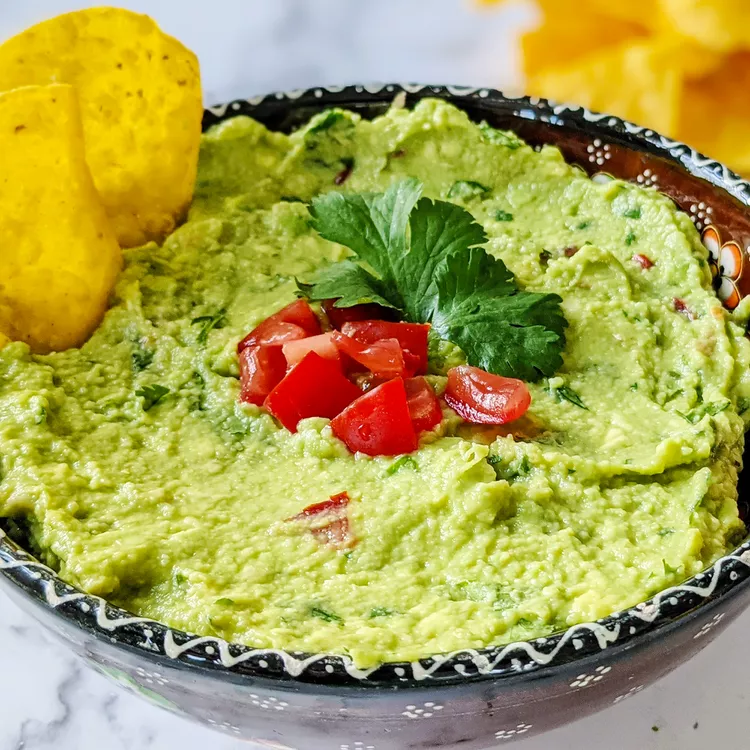

Guacamole

The best dip on earth
Restaurant-worthy guacamole is just a few ingredients away. You'll be surprised how easy it is to make this
top-rated guacamole recipe. You'll come back to it again and again!
Ingredients
- 3 Avocados - pitted, peeled, mashed
- 1 teaspoon salt
- 2 roma tomatoes, diced
- 1/2 cup diced onions
- 3 tablespoons chopped fresh cilantro
- 1 teaspoon minced garlic
- 1 pinch ground cayenne pepper
Instructions
- Mash avocados, lime juice, and salt together in a medium bowl; mix in tomatoes, onion, cilantro, and garlic.
Stir in cayenne pepper.
- Serve immediately, or cover and refrigerate for 1 hour for improved flavor